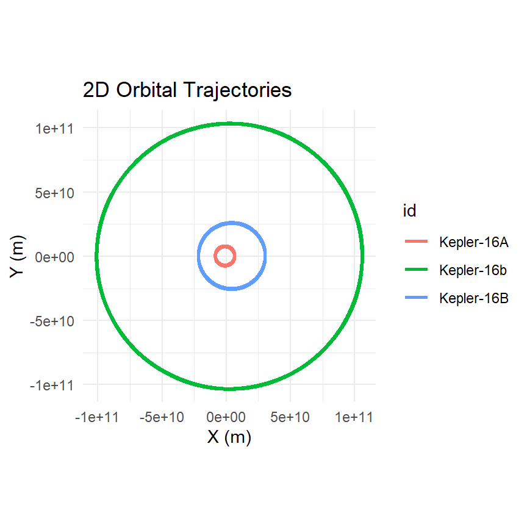

add_binary <- function(system, m_A, m_B, d, ids = c("A", "B")) {
r_A <- d * m_B / (m_A + m_B)
r_B <- d * m_A / (m_A + m_B)
v_A <- sqrt(gravitational_constant * m_B^2 / ((m_A + m_B) * d))
v_B <- sqrt(gravitational_constant * m_A^2 / ((m_A + m_B) * d))
system |>
add_body(ids[1], mass = m_A, x = r_A, vy = v_A) |>
add_body(ids[2], mass = m_B, x = -r_B, vy = -v_B)
}9 Binary Stars and Circumbinary Planets
Most stars are not alone. Roughly half of Sun-like stars have a companion, and the “central body at rest at the origin” picture that works for the solar system fails completely for a pair of comparable masses: both stars move, both move a lot, and the only thing that stays put is the point between them. The Kepler-16 example in the package documentation sets up a real binary with a planet around it, using four velocity formulas stated without derivation. This chapter derives them from Chapter 4, checks each one against the simulation, extends them to an eccentric binary, and then asks the question the discoverers of Kepler-16b had to answer: how close to a pair of stars can a planet orbit and survive?
9.1 Two stars
Take stars of mass \(m_A\) and \(m_B\) a distance \(d\) apart on circular orbits. Chapter 4 reduced this to a single relative orbit with gravitational parameter \(\mu = G(m_A + m_B)\), so the relative speed on a circle of radius \(d\) is \(u = \sqrt{G(m_A+m_B)/d}\). Each star’s actual orbit is around the center of mass, and from Equation 4.2 the two stars sit on opposite sides of it at distances
\[ r_A = \frac{m_B}{m_A + m_B}\,d, \qquad r_B = \frac{m_A}{m_A + m_B}\,d, \tag{9.1}\]
so the heavier star makes the smaller circle. The speeds scale the same way, \(v_A = u\,m_B/(m_A+m_B)\) and \(v_B = u\,m_A/(m_A+m_B)\), and substituting \(u\):
\[ v_A = \sqrt{\frac{G\,m_B^2}{(m_A + m_B)\,d}}, \qquad v_B = \sqrt{\frac{G\,m_A^2}{(m_A + m_B)\,d}}. \tag{9.2}\]
These are the formulas in the documentation. Note what they say: the star you are computing the speed of appears only in the denominator, inside the total mass; the numerator has the mass of the other star. A light companion barely moves the heavy primary. The momenta \(m_A v_A\) and \(m_B v_B\) are equal, so with the stars on opposite sides moving in opposite directions, the total momentum is zero and the center of mass stays at the origin. The period, from Kepler’s third law with \(a = d\), is \(T = 2\pi\sqrt{d^3/G(m_A+m_B)}\) for both stars; they must have the same period, since they are always opposite each other.
A function that builds any circular binary from these formulas:
Check it on a lopsided pair, a Sun-mass star with a companion of a tenth of the mass, one AU apart:
pair <- create_system() |>
add_binary(m_A = mass_sun, m_B = 0.1 * mass_sun, d = distance_earth_sun) |>
simulate_system(time_step = seconds_per_hour * 6, duration = seconds_per_year * 2)
pair |>
group_by(id) |>
summarise(r_min_AU = min(sqrt(x^2 + y^2)) / distance_earth_sun,
r_max_AU = max(sqrt(x^2 + y^2)) / distance_earth_sun)
#> # A tibble: 2 × 3
#> id r_min_AU r_max_AU
#> <chr> <dbl> <dbl>
#> 1 A 0.0909 0.0909
#> 2 B 0.909 0.909Each star stays on a circle (minimum and maximum radius agree), the radii are in the ratio 1 to 10 as Equation 9.1 says, and they add to one AU. The period should be shorter than a year by the factor \(\sqrt{1.1}\), because the total mass is \(1.1\,M_\odot\):
c(predicted = 365.25 / sqrt(1.1),
measured = measure_period(pair, "B", "A") / seconds_per_day)
#> predicted measured
#> 348.2522 348.2169For a binary the natural frame is the one centered on the pair’s center of mass, and shift_reference_frame(sim, "barycenter") puts every time step in it. In that frame the center of mass sits at the origin at rest, and a body’s distance from the origin is its distance from the barycenter, which is what a circumbinary planet orbits. measure_period() with no center argument measures a body’s period about the origin, which is how the next section uses it.
9.2 An eccentric binary
Real binaries are rarely circular. Kepler-16’s two stars have \(e = 0.16\). The same reduction handles it: pick the relative orbit, then split it between the stars by the mass ratio. If the relative orbit has semi-major axis \(a_{\mathrm{bin}}\) and eccentricity \(e\), start the stars at periapsis, where the separation is \(d_p = a_{\mathrm{bin}}(1-e)\) and the relative speed, from vis-viva, is
\[ u_p = \sqrt{\frac{\mu}{a_{\mathrm{bin}}}\cdot\frac{1+e}{1-e}}, \qquad \mu = G(m_A+m_B). \tag{9.3}\]
Then \(v_A = u_p\,m_B/(m_A+m_B)\) and \(v_B = u_p\,m_A/(m_A+m_B)\) as before, and the stars are placed at \(d_p\,m_B/(m_A+m_B)\) and \(d_p\,m_A/(m_A+m_B)\) on either side of the origin.
add_eccentric_binary <- function(system, m_A, m_B, a_bin, e, ids = c("A", "B")) {
M <- m_A + m_B
d_p <- a_bin * (1 - e)
u_p <- sqrt(gravitational_constant * M / a_bin * (1 + e) / (1 - e))
system |>
add_body(ids[1], mass = m_A, x = d_p * m_B / M, vy = u_p * m_B / M) |>
add_body(ids[2], mass = m_B, x = -d_p * m_A / M, vy = -u_p * m_A / M)
}The eccentricity vector from Chapter 4 checks that this produced the orbit it was supposed to:
ecc_pair <- create_system() |>
add_eccentric_binary(m_A = mass_sun, m_B = 0.5 * mass_sun,
a_bin = distance_earth_sun, e = 0.4) |>
simulate_system(time_step = seconds_per_hour * 6, duration = seconds_per_year)
get_orbital_elements(ecc_pair, "B", "A", mu = gravitational_constant * 1.5 * mass_sun) |>
summarise(e_min = min(e), e_max = max(e))
#> # A tibble: 1 × 2
#> e_min e_max
#> <dbl> <dbl>
#> 1 0.400 0.4009.3 Kepler-16
Kepler-16b was the first planet confirmed to orbit two stars, found in 2011 by the Kepler spacecraft when it was seen transiting both of them (Doyle et al. 2011). The system is a K-type star of \(0.69\,M_\odot\) and an M-type star of \(0.20\,M_\odot\) in a 41-day orbit with semi-major axis 0.224 AU and eccentricity 0.16, and a Saturn-mass planet (\(0.33\,M_{\mathrm{Jup}}\)) orbiting the pair every 229 days at 0.705 AU, on a nearly circular orbit in the same plane. The documentation builds it with a circular binary; here it is with the real eccentricity.
The planet is far enough out that the two stars act on it almost like a single star of their combined mass at the barycenter. So the planet goes on a circle of radius \(0.705\) AU around the origin at the circular speed for mass \(m_A + m_B\):
AU <- distance_earth_sun
m_A <- 0.69 * mass_sun
m_B <- 0.20 * mass_sun
m_p <- 0.333 * mass_jupiter
r_planet <- 0.7048 * AU
v_planet <- sqrt(gravitational_constant * (m_A + m_B) / r_planet)
kepler16 <- create_system() |>
add_eccentric_binary(m_A, m_B, a_bin = 0.2243 * AU, e = 0.159,
ids = c("Kepler-16A", "Kepler-16B")) |>
add_body("Kepler-16b", mass = m_p, x = r_planet, vy = v_planet) |>
simulate_system(time_step = seconds_per_hour, duration = seconds_per_year * 2)plot_orbits(kepler16)
The planet’s orbit is not a two-body orbit about anything, but about the barycenter it is very nearly one, and the barycentric frame lets us measure it. The predictions are Kepler’s third law with the combined mass of all three bodies, and a period of 229 days for the planet and 41 days for the stars:
k16 <- shift_reference_frame(kepler16, "barycenter")
mu_total <- gravitational_constant * (m_A + m_B + m_p)
c(planet_predicted_days = 2 * pi * sqrt(r_planet^3 / mu_total) / seconds_per_day,
planet_measured_days = measure_period(k16, "Kepler-16b") / seconds_per_day,
binary_measured_days = measure_period(k16, "Kepler-16B", "Kepler-16A") /
seconds_per_day)
#> planet_predicted_days planet_measured_days binary_measured_days
#> 229.01798 220.79718 41.12564Both match the published periods. The planet is not exactly on a circle, because the two stars’ pull is not exactly that of a point at the barycenter; the difference is a small periodic wobble at the binary’s period, and you can see it by plotting the planet’s distance from the barycenter over time. That wobble is real and it is how the planet’s orbit was characterized from the transit timing.
9.4 How close is too close?
A planet orbiting a binary can only survive if it is far enough out that the two stars act like one. Too close, and the alternating pulls of the stars as they go around pump energy into the planet’s orbit until it is ejected or thrown into one of the stars. The boundary is not sharp, and it depends on the binary’s mass ratio and eccentricity, but it is roughly two to four times the binary’s separation. Holman and Wiegert (Holman and Wiegert 1999) ran thousands of three-body simulations and fitted a formula for the critical semi-major axis:
\[ \frac{a_{\mathrm{crit}}}{a_{\mathrm{bin}}} = 1.60 + 5.10\,e - 2.22\,e^2 + 4.12\,q - 4.27\,e q - 5.09\,q^2 + 4.61\,e^2 q^2, \qquad q = \frac{m_B}{m_A + m_B}. \tag{9.4}\]
For Kepler-16, \(q = 0.22\) and \(e = 0.16\) give \(a_{\mathrm{crit}} \approx 2.9\,a_{\mathrm{bin}}\), or 0.65 AU. The planet is at 0.705 AU, nine percent outside the line. It is one of the closest-in circumbinary planets known, and it sits almost exactly where the stability boundary says a planet can sit.
We can test the boundary ourselves. Keep the real stars and drop a test planet at a range of distances, from well inside the critical radius to well outside, for fifteen years each:
a_bin <- 0.2243 * AU
trial <- function(ratio) {
r <- ratio * a_bin
create_system() |>
add_eccentric_binary(m_A, m_B, a_bin = a_bin, e = 0.159,
ids = c("Kepler-16A", "Kepler-16B")) |>
add_body("planet", mass = 1e20, x = r,
vy = sqrt(gravitational_constant * (m_A + m_B) / r)) |>
simulate_system(time_step = seconds_per_hour * 3,
duration = seconds_per_year * 15) |>
shift_reference_frame("barycenter") |>
filter(id == "planet") |>
mutate(r = sqrt(x^2 + y^2 + z^2),
energy = (vx^2 + vy^2 + vz^2) / 2 -
gravitational_constant * (m_A + m_B + 1e20) / r) |>
summarise(ratio = ratio,
r_min = min(r) / a_bin, r_max = max(r) / a_bin,
bound_at_end = last(energy) < 0)
}
stability <- bind_rows(lapply(c(1.5, 2.0, 2.5, 2.8, 3.1, 3.5, 4.0), trial))
stability
#> # A tibble: 7 × 4
#> ratio r_min r_max bound_at_end
#> <dbl> <dbl> <dbl> <lgl>
#> 1 1.5 0.0661 1459. FALSE
#> 2 2 0.0174 3528. FALSE
#> 3 2.5 1.80 13.1 TRUE
#> 4 2.8 2.55 2.90 TRUE
#> 5 3.1 2.90 3.18 TRUE
#> 6 3.5 3.33 3.57 TRUE
#> 7 4 3.87 4.05 TRUEA planet that survives keeps its distance from the barycenter within a narrow band around where it started and stays bound. One that does not either wanders far inward and outward or ends with positive energy. The transition in the table sits near the Holman-Wiegert value of \(2.9\), which is remarkable agreement for a formula fitted to a different set of simulations with a different integrator. Fifteen years is not forever, and a planet that looks stable here might be ejected after a thousand; the published fit is for runs of ten thousand binary periods. But the lesson is already visible: there is a hard inner edge to where planets can live around a binary, and Kepler-16b lives right at it.